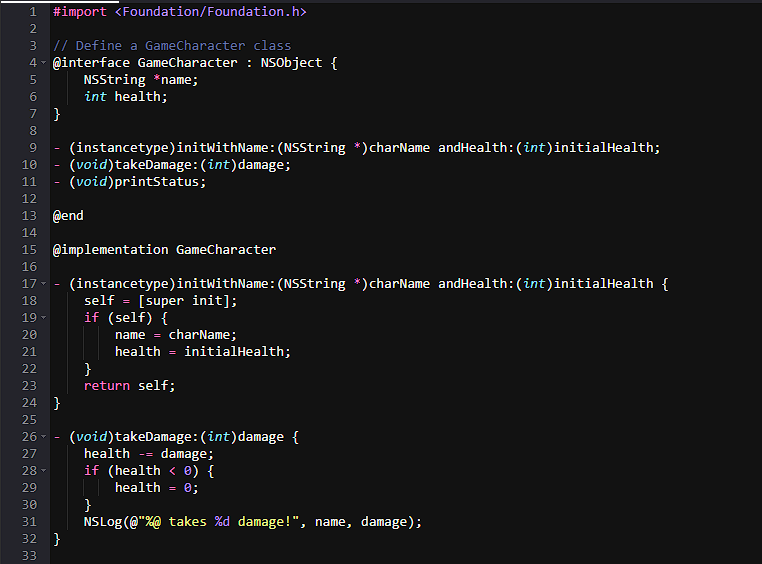

Objective - C
The Future of Programming
~ Maximize your creativity ~
Objective-C opens the creative mind in software development by blending the power of C with the flexibility of object-oriented programming, encouraging developers to think more dynamically and modularly. Its unique messaging syntax, influenced by Smalltalk, challenges conventional programming structures and invites a deeper understanding of how objects interact at runtime. This dynamic nature allows developers to design highly customizable, responsive applications, especially within the Apple ecosystem. By promoting modular thinking and runtime flexibility, Objective-C encourages problem-solving that goes beyond rigid structures, making room for more imaginative, elegant solutions in app architecture, user experience, and feature implementation.
~ Enact your vision ~
Objective-C continues to play an important role in the development of popular video games, particularly within the iOS and macOS platforms. While many modern game engines like Unity and Unreal use C# or C++, Objective-C is still widely used for building game infrastructure, integrating with Apple’s native APIs, and optimizing performance on Apple devices. Games that rely on Apple-specific technologies such as SpriteKit, SceneKit, and Metal often use Objective-C for core game logic, rendering, and user interface design. Popular mobile games, including early versions of titles like Crossy Road, Fruit Ninja, and Angry Birds, utilized Objective-C to take full advantage of iOS capabilities. Its dynamic runtime and ability to seamlessly interact with Apple frameworks make Objective-C a valuable tool for developers who want fine control over performance and system-level features, fostering creativity in crafting responsive, polished gaming experiences.
“Objective-C is a language that lets you write code that’s easy to read, powerful, and expressive—it’s the best of C with the best of Smalltalk.”...
Objective-C is a powerful, expressive, and readable programming language that combines the performance of C with the elegance of object-oriented design. Originally inspired by Smalltalk, Objective-C brings dynamic messaging and flexible architecture to the table—making it a perfect fit for building robust macOS and iOS applications. Whether you're maintaining legacy code, diving into the foundations of Cocoa frameworks, or exploring Apple development at a deeper level, Objective-C gives you the tools to write clear, efficient, and elegant code.
So, Ready to Code?
Join millions of programmers today, and take advantage of the the perks that come with Objective-C!